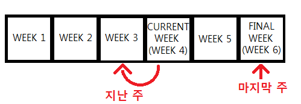

Korean Days (일/날/하루)
Korean Weeks (주)
Korean Months (달/개월)
Korean Years (년)
Vocabulary
Months of the year:
*June (6월/유월) and October (10월/시월) should actually be 육월 and 십월 but, written like that, they are difficult to pronounce. Because of this, their correct pronunciations are 유월 and 시월 NOT 육월 and 십월.
Click on the English words below to see information and examples of that word in use. You probably won’t be able to understand the grammar within the sentences at this point, but seeing words being used in sentences is very helpful for understanding how they can be used.
Nouns:
기회 = chance/opportunity
Common Usages:
Examples:
계획 = plans
Common Usages:
Example:
회사원 = office worker
Notes: If I asked 100 people in Canada what their job is, I would probably only get the answer “office worker” a few times. In Korea however, probably 50% of the people would respond with “office worker.” Many Korean people work for big companies in offices, not all doing the same thing obviously, but I’m not exactly sure what they’re all doing in there. Korea has no real natural resources, so the major industry is just “working and business.”
You will see the suffix “원” attached to different words to refer to people.
Example:
요리사 = a cook/chef
Notes: You will see the suffix “사” attached to different words that indicate some sort of specialized job. For example: 의사 (doctor), 교사 (teacher), 강사 (instructor)
Example:
운전사 = a driver
Common Usages:
Notes: This is not the same “사” in 요리사.
“기사님” is common when talking to bus and taxi drivers
Example:
Verbs:
달리다 = to run
Common Usages:
Notes: “뛰다” is another common way to say “to run”
Example:
요리하다 = to cook
The noun form of this word translates to “cooking”
Common Usages:
Example:
운전하다 = to drive
Common Usages:
Example:
죽다 = to die
The pronunciation of this word is closer to “죽따”
Common Usages:
Examples:
Adjectives:
두렵다 = to be scared
The pronunciation of this word is closer to “두렵따”
두렵다 follows the ㅂ irregular
Notes: 무섭다 and 두렵다 both translate to “scary.” 무섭다 is more typically used to describe the feeling of being scared, usually as it applies to something shocking or something outright scary like snakes or spiders. 두렵다 is more about psychological things in the future, like the fear of death or the fear of tomorrow.
두렵다 and 무섭다 typically describe that something is scary, but it can be used to indicate that you are scared of that thing by using the Subject – Object – Adjective form introduced in Lesson 15.
Example:
이상하다 = to be strange
The noun form of this word translates to “abnormality”
Common Usages:
Example:
Adverbs and Other words:
동안 = for, during, while
Notes: Used to indicate how long something is being done. Often placed after an indication of time.
For example:
In this same sense, it can be placed after a noun that describes a time. For example:
Also used with ~는 것 (Introduced in Lesson 26) to say “while.” For example:
Example:
달 = month
Common Usages:
Notes: When counting months, you can either use 달 or 개월. When using 달, you must use the pure Korean numbers, and when using 개월, you must use the Sino-Korean numbers. There is no difference in meaning, and both are used frequently
Example:
개월 = month
Notes: When counting months, you can either use 달 or 개월. When using 달, you must use the pure Korean numbers, and when using 개월, you must use the Sino-Korean numbers. There is no
difference in meaning, and both are used frequently
Example:
날 = day
Notes: 날 is used as a stand alone word and not counted. It is used when talking about a specific day by itself.
Examples:
하루 = one day
Common Usages
Notes: When counting the number of days, you can usually say something like “5일” (five days). However, for a small number of days (one day, two days) there is a special word that corresponds to that number of days. “일 일” to mean “one day” would never be used.
Example:
이틀 = two days
Common Usages
Notes: When counting the number of days, you can usually say something like “5일” (five days). However, for a small number of days (one day, two days) there is a special word that corresponds to that number of days. “이 일” to mean “two days” would be used, but 이틀 would be more common.
Example:
사흘 = three days
Notes: Even though “사” (‘four’) is in the word “사흘,” I assure you that 사흘 means “3 days.” Many Korean people think that “사흘” actually means “four days,” and I have pwned some Korean people by showing them that it actually means “three days” by looking it up in the Korean-Korean dictionary with them.
Example:
지난 주 = last week
Notes: 지난 can be placed before some indicators of time to mean “last ….”
There are two similar but different meanings for the word “last” in English. 지난 is used for only ONE of those meanings. 지난 is used to talk about something in the past, as in “last night I went to bed late.” It is not used to talk about the last thing in a sequence. See Lessons 10 and 11 for more information.
Example:
지난 달 = last month
Example:
이번 주 = this week
Example:
이번 달 = this month
Example:
다음 주 = next week
Notes: 다음 can be placed before some indicators of time to mean “next”
Example:
다음 달 = next month
Example:
작년 = last year
Example:
올해 = this year
Example:
내년 = next year
Example:
평생 (동안) = in my whole life
This word appears in Korean Sign Explanation Video 12.
Common Usages:
Examples:
보통 = usually
Notes: This can be used as an adverb, for example:
It can also be used before a noun to mean “typical” or “usual” for example:
.
Introduction
In this lesson, you will build on what you learned in Lesson 10 by learning how to use a variety of different words of time in Korean. Using these words, you will be able to say “I did X for 2 months” or “I didn’t do Y last week.” You will also learn whether you should use the pure Korean or Sino-Korean numbers when using these different words of time.
The use of pure Korean or Sino-Korean numbers may seem random, but there is a reason for it. Anytime the ‘time’ word is of Chinese origin, the Sino-Korean numbers are used. For example “개월” (month) is counted using Sino-Korean numbers, because “개월” is of Chinese origin and has corresponding Chinese (한자) characters. “달” (also meaning month) is a Korean word, and thus, is counted using Korean numbers. A lot of Korean words are of Chinese origin and have corresponding Chinese (한자) characters. You will learn about those later.
This lesson is a little bit less organized than the previous lessons. It was difficult to teach everything in this lesson together because you need to have a mutual understanding of all concepts in order to understand one of them. In order to understand how to use 동안, you need to know how to use 주. But in order to understand how to use 주, you should understand how to use 동안. Around and around we go. Anyways, I made it as simple as possible. After this lesson, any time you learn about other ‘time’ grammar concepts, it should be really easy because this lesson will give you a solid base to work from.
“For” a certain amount of time(동안)
동안 is a very useful word that can be used to indicate how long an action occurs. It is typically placed after a duration of time, for example:
동안 can also be used to indicate that an action occurs “while” another action occurs. You will learn about that application in Lesson 33 after learning some key grammar points in the lessons to come.
Those can then be added into sentences to indicate how long one does something for. Notice also that no additional particle is added to 동안. One would think that 에 should be added, but it is not.
While the translation of “동안” in these examples is usually “for”, in essence, what you are doing is stating “for that period of time.” Understanding this will help you understand later usages of “동안” in future lessons. For example:
Remember:
It doesn’t matter if you use the word or the numeral when writing a number. However, typically the word is written when a pure Korean word is used with a counter like 개, 명, 번, 시간, 대, 살, etc. In situations where Sino-Korean numbers are written (for example, in the sentences above) it makes no difference if you write the numeral or the word.
Also remember that the spacing is different depending on if you write a numeral or a word. If writing the word, there should be a space between the number and the word. For example:
저는 십 분 동안 걸었어요
If writing a numeral, it doesn’t matter if you include a space or not. Both are seen as acceptable:
저는 10분 동안 걸었어요
저는 10 분 동안 걸었어요
I want to show you more and more examples of 동안, and I expect you might not want to limit yourself to only “분” (minutes), so lets move on to hours.
Korean Hours(시간)
Talking about minutes is easy because you always simply use 분. For example:
3시 20분 means “3:20”, and
20분 동안 means “for 20 minutes”
When talking about hours, however, 시 is used when talking about the hour on a clock, whereas 시간 is used when counting hours. Notice the difference between these two sets:
*Notice that 보다 (to see) is used when watching something. You can also use 보다 when you watch a performance or concert, or similar things. In English “I saw a TV” and “I watched TV” have two different meanings, but Koreans simply say “I see TV.”
At this point you are probably asking saying “Okay, I understand how to say that I have done things for X hours or minutes, but what about if I want to say something like:
I will eat in three hours, or
I ate three hours ago
I will go in 10 minutes, or
I came 10 minutes ago”
You will learn how to create those types of sentences when you learn about 전 and 후 in Lesson 24. For the moment, there is a ton of content in this lesson, so try to focus on what is presented here.
Korean Seconds(초)
When talking about seconds, you need to use the Sino-Korean numbers. When putting a number before “초,” it doesn’t matter if you use the word or the numeral. For example:
Examples in sentences:
Last/Next(지난/다음)
지난 and 다음 are two words that you can use in many situations, including in situations related to time. In Lesson 10, you learned about 마지막, which can be used to refer to the “last” or “final” thing in a sequence. Remember, Korean people use another word when referring to a “previous” (or last) thing, as in: “I saw a movie last (the previous) week.”
In order to refer to a “previous” thing, the word “지난” can be used. I drew a picture to depict the image I have in my head distinguishing 마지막 and 지난. Imagine you are on a six week trip, and you are currently in your fourth week of the trip. You can use “지난” to refer to the previous week, and you can use “마지막” to refer to the final week. (You can refer to them both as “last week” in English). For example:

지난 can be added immediately before some words of time (I discuss “some” a little bit later) to refer to a “previous” thing. This often translates to “last,” though. For example:
In order to say “attend a class,” Korean people say “수업을 듣다,” which literally translates to “listen to/hear a class.” As such, you can see that the particle ~을 is attached to “수업” because “the class” is the noun that is being listened to. Korean learners are sometimes confused as to why “~에” is not attached to “수업” because they are accustomed to the English way of saying “I didn’t go to the last class”.
Also, note that this sentence is also correct, but is referring to a different class than above:
지난 can be added only before some words of time. For example, you couldn’t say “지난 분/지난 초.” These would mean “last minute/second” as in ‘the last minute/second’ that just passed – which doesn’t make any sense. Notice that they do not have the meaning of “I handed in my paper at the last minute.” This meaning refers to the last minute in a sequence of minutes; therefore, “마지막” must be used in this case.
시간, however, means “time” in addition to being a counter for “hours.” So, “지난 시간” can be used to mean “last time” (but not “last hour”).
You can also use the word 번 to refer to the last “time” something happened.
다음 is used in the same way as 지난, but it means “next.” For example:
Like above, 다음 can be used with 시간 to mean “next time,” but not “next hour.”
Korean Days(일/날/하루)
Days are very confusing in Korean because there are a few different words you need to be acquainted with. You learned the names of the days of the week in the vocabulary section of another lesson. You should have noticed that every day of the week ends in 일. 일 means “day” but it is never used alone (if it is used alone, it means ‘work’). I’m looking at my Korean calendar now, and see a variety of words ending in “일.” Don’t worry about these words now, just recognize the importance of “일” within them:
일 is also the counter for days. You learned in Lesson 10 that you must use pure Korean numbers when counting. When you count days, however, you use Sino-Korean numbers. When putting a number before “일,” it doesn’t matter if you use the word or the numeral.
To make things more confusing, if you are counting days from 1 – 10 there is a word that corresponds to “one day,” another word that corresponds to “2 days,” another word that corresponds to “3 days” etc… The most common of these words is 하루 which means “one day.” 하루 is used much more than 일 일. But 2일 (이 일)/3일 (삼 일)/4일 (사 일)/5일 (오 일)/etc are used more than their corresponding words.
You can also place a (Sino-Korean) number before 일 to refer to a specific day in a month. It seems like it would be easy to confuse when one is talking about the day of a month (3일) and when doing something for a specific period (3일). But, in sentences, these are easily distinguishable:
You can refer to a specific day and month by adding #일 after #월:
날 is another word that means “day” and can be used as a stand alone word, but not counted. It is used when talking about a specific day by itself. For example:
If you want to talk about doing something on the first/second/third day, you can use 번째 (which you learned in the previous lesson) with 날. For example:
첫날 is a word that specifically refers to the first day:
Korean Weeks(주)
Weeks in Korean can be used in sentences just like 일 (day) except that there are no other weird words to worry about. You use Sino-Korean numbers when talking about weeks:
The word “주” can also be used as a counter to count weeks. When counting weeks, just like when counting days, Sino-Korean numbers are used. When putting a number before “주,” it doesn’t matter if you use the word or the numeral. For example:
The word “주일” can also be used as a counter for weeks. This is acceptable, but it sounds a bit more natural to use “주” as shown above. For example:
Korean Months(달/개월)
First, notice that the names of each month correspond to the number of the month in the calendar For example:
January = 1월
February = 2월
December = 12월
When counting months, you can either use 달 or 개월. When using 달, you must use the pure Korean numbers, and when using 개월, you must use the Sino-Korean numbers. There is no difference in meaning, and both are used frequently. When putting a number before 달, I prefer to write the Korean word. When putting a number before 개월, it doesn’t matter if you use the word or the numeral.
My Korean grammar teacher told me years ago that ‘동안’ is actually incorporated into the meaning of 달, which would mean that you wouldn’t have to say 동안 after 달. Still, though, most people use 동안 after 달.
Korean Years(년)
Years are used just like weeks, which means that you must use the Sino-Korean numbers. When putting a number before “년,” it doesn’t matter if you use the word or the numeral:
However, if you want to say “last/next year” in Korean, you can’t use “지난/다음 년.” Instead, you must use separate words:
This Week/This Month/This Time(이번)
Finally, you can use 이번 just like 지난/다음 when talking about weeks or months to mean “this week/this month.” You cannot say “이번 년,” instead you must use the separate word “올해.”
You cannot use 이번 when talking about minutes/seconds/hours. “I want to go to school this hour” doesn’t make any sense. But remember, in addition to meaning ‘hour’ 시간 also means “time.” This means that you can say 이번 시간 to mean “this time,” which is usually used when talking about “this time in class.” For example:
In most other cases, it is more natural to use “이번에” instead of “이번 시간:”
번 can also be added after 지난/다음 to mean “last/next time”
“Per”
When talking about each of these units of time, you can add the particle ~에 to indicate within that unit of time, how much something was done. You can usually translate this to “per” in English. For example:
Almost all the examples in this lesson used 동안. There are other ways you can talk about these time words without using 동안 (for example, “I will go to Canada 3 days from now”). However, this lesson was reaching the 6 page mark, and I didn’t want to overload you more than I already have. I feel like the material in this lesson alone is enough to make your head spin for a while, so I will end it here.
In later lessons, you will learn how to apply the concepts you learned in this lesson to more complicated sentences.
Want to try to create some sentences using the vocabulary and grammar from this lesson?